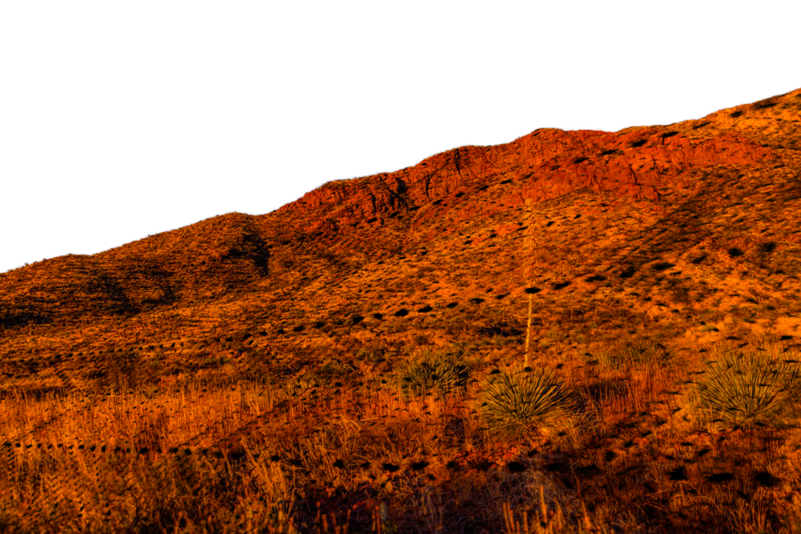
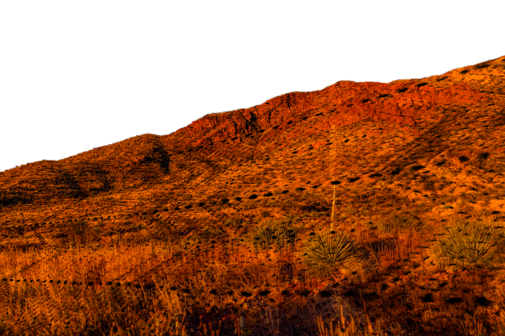

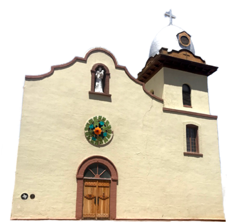
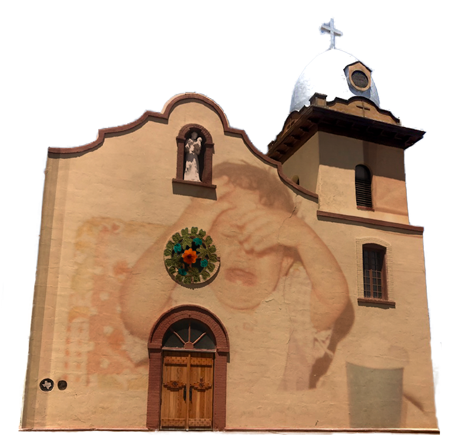
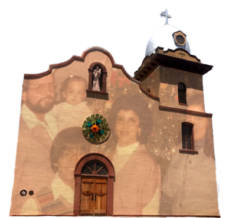
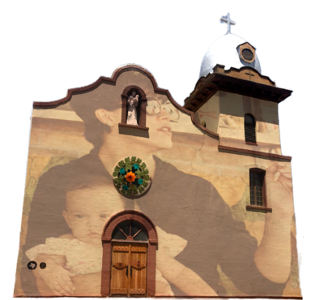
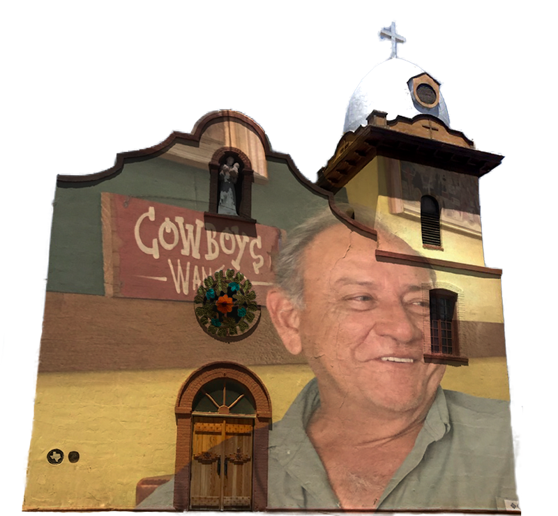
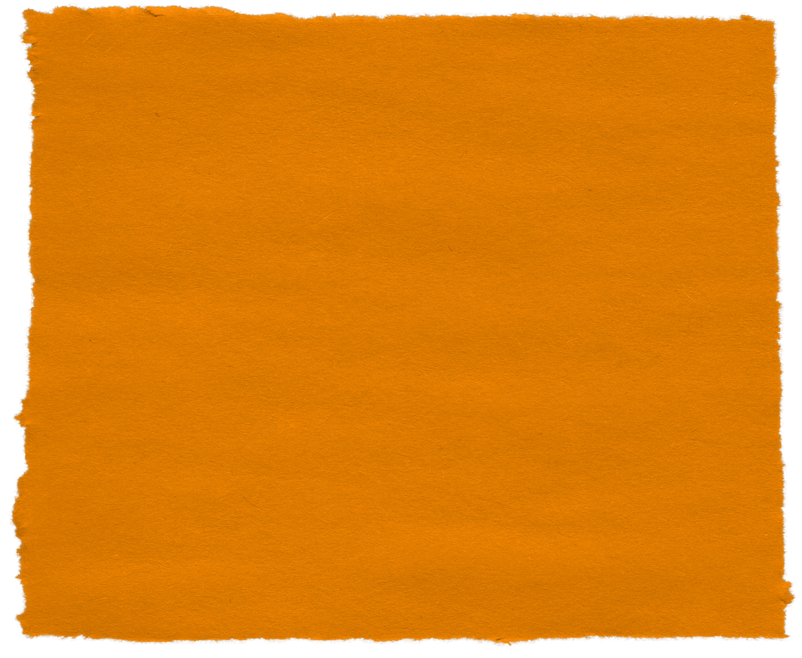
A podcast and a place for PETE company member Cristi Miles to
reflect on conversations that she was never brave enough to
have with her parents, a decir lo que cuesta para expresar. To
be released in 4 installments.
Podcast Credits
- Cristi Miles - Producer/Host
- Marina Miles - interviewee
- Rudolph Miles - interviewee
- Phillip Johnson - Producer/editor
- Mark Valadez - music
- Kristina Mast - transcription
- Rebecca Lingafelter - Producer
- Trevor Sargent - Website
- Molly Gardner - Production Support
Special thanks to Coho Productions, Philip Cuomo, Peter Ksander, Reed College, Mom, Dad, Aunt Carol, Nena, Bibi, Heather, Clint, Estella, Anaïs Gurrola, and The ICP 2020-21 Cohort.
Created by PETE.
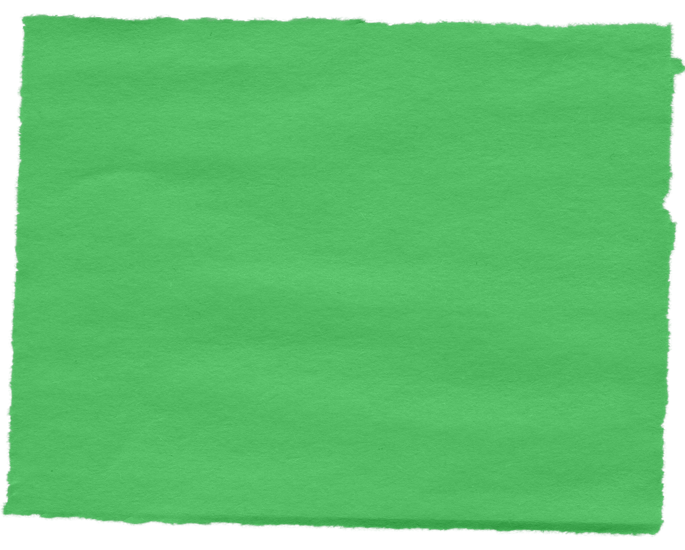
una historia de a young refugee niña making her way to the frontera told with shadow puppets and movement.
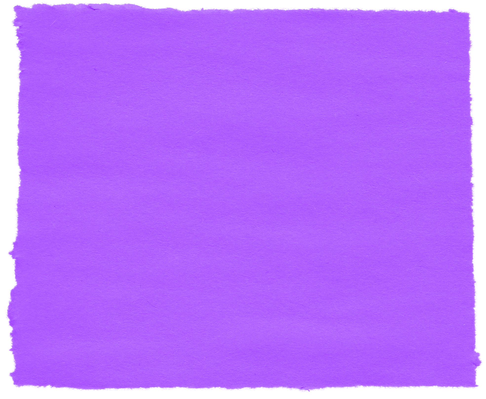
a release of todo la música generated for the work.
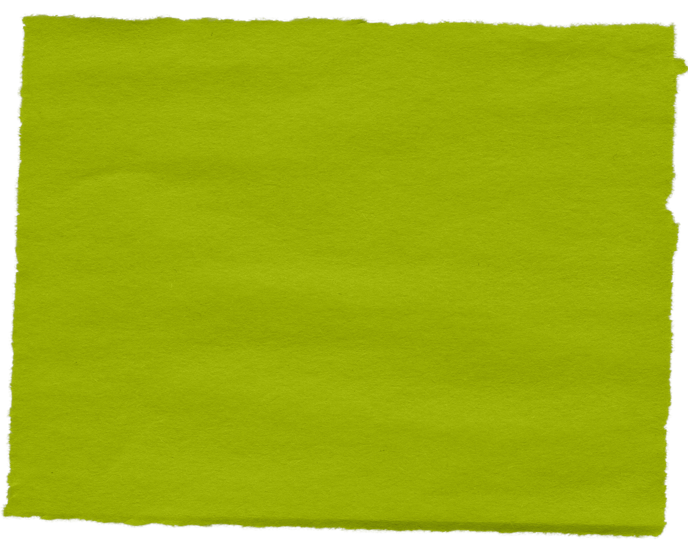
a multi-media offering including stop motion animation, music, and a five-part story, telling of Cristi’s journey away from and back to the border. Un cortometraje/ una película que muestra la historia de salir y luego regresar a la frontera.
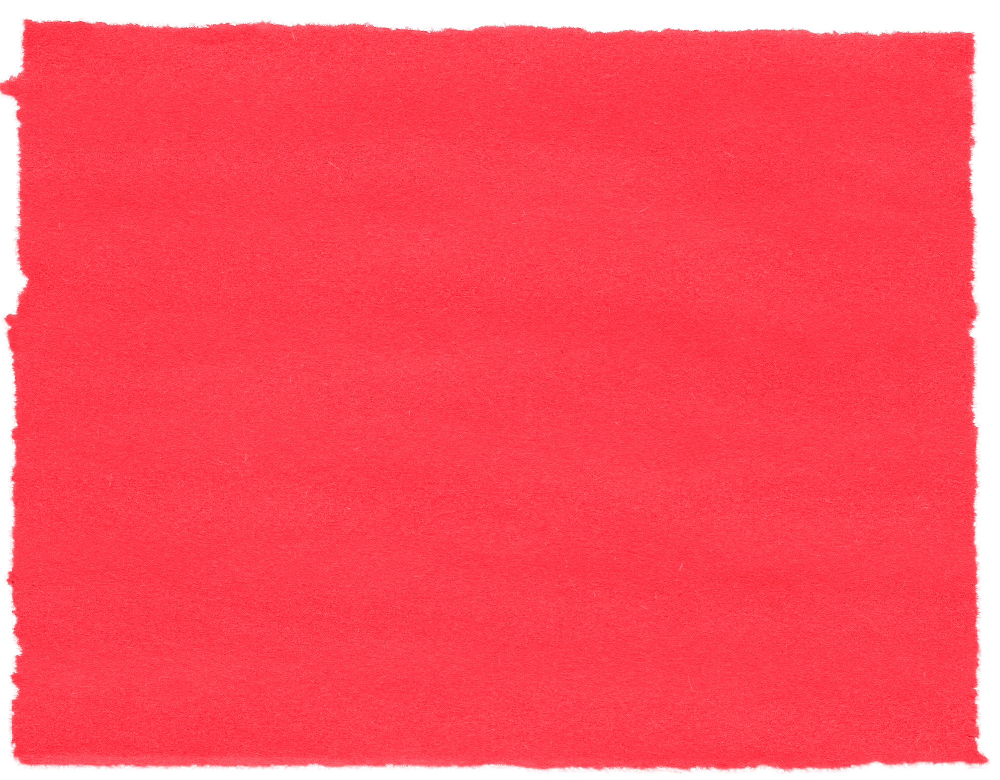
a meal, a gathering, a protest, and a call to action. La sobremesa, un reunión, una protesta, y una llamada fuerte para hacer algo.